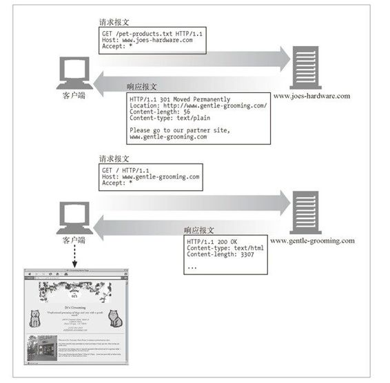
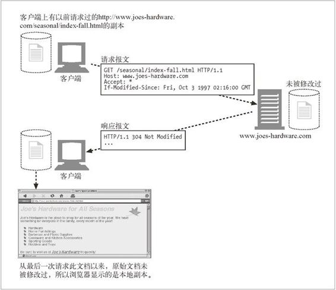

3.4 状态码
如前面的表 3-2 所示，HTTP 状态码被分成了五大类。本节对这五类 HTTP 状态码中的每一类都进行了总结。
状态码为客户端提供了一种理解事务处理结果的便捷方式。尽管并没有实际的规范对原因短语的确切文本进行说明，本节还是列出了一些原因短语示例。我们所列的是 HTTP/1.1 规范推荐使用的原因短语。
3.4.1 100～199——信息性状态码
HTTP/1.1 向协议中引入了信息性状态码。这些状态码相对较新，关于其复杂性和感知价值存在一些争议。表 3-6 列出了已定义的信息性状态码。
表3-6 信息性状态码及原因短语
| 状 态 码 | 原因短语 | 含 义 |
|---|---|---|
| 100 | Continue | 说明收到了请求的初始部分，请客户端继续。发送了这个状态码之后，服务器在收到请求之后必须进行响应。更多信息请参见附录C中的Expect 首部介绍 |
| 101 | Switching Protocols | 说明服务器正在根据客户端的指定，将协议切换成Update 首部所列的协议 |
100 Continue 状态码尤其让人糊涂。它的目的是对这样的情况进行优化：HTTP 客户端应用程序有一个实体的主体部分要发送给服务器，但希望在发送之前查看一下服务器是否会接受这个实体。这可能会给 HTTP 程序员带来一些困扰，因此在这里进行了比较详细（它如何与客户端、服务器和代理进行通信）的讨论。
客户端与100 Continue
如果客户端在向服务器发送一个实体，并且愿意在发送实体之前等待 100 Continue 响应，那么，客户端就要发送一个携带了值为 100 Continue 的 Expect 请求首部（参见附录 C）。如果客户端没有发送实体，就不应该发送 100 Continue Expect 首部，因为这样会使服务器误以为客户端要发送一个实体。
从很多方面来看，100 Continue 都是一种优化。客户端应用程序只有在避免向服务器发送一个服务器无法处理或使用的大实体时，才应该使用 100 Continue。
由于起初对 100 Continue 状态存在一些困惑（而且以前有些实现在这里出过问题），因此发送了值为 100 Continue 的 Expect 首部的客户端不应该永远在那儿等待服务器发送 100 Continue 响应。超时一定时间之后，客户端应该直接将实体发送出去。
实际上，客户端程序的实现者也应该做好应对非预期 100 Continue 响应的准备（这很烦人，但确实如此）。有些出错的 HTTP 应用程序会不合时宜地发送这个状态码。
服务器与100 Continue
如果服务器收到了一条带有值为 100 Continue 的 Expect 首部的请求，它会用 100 Continue 响应或一条错误码来进行响应（参见表 3-9）。服务器永远也不应该向没有发送 100 Continue 期望的客户端发送 100 Continue 状态码。但如前所述，有些出错的服务器可能会这么做。
如果出于某种原因，服务器在有机会发送 100 Continue 响应之前就收到了部分（或全部）的实体，就说明客户端已经决定继续发送数据了，这样，服务器就不需要发送这个状态码了。但服务器读完请求之后，还是应该为请求发送一个最终状态码（它可以跳过 100 Continue 状态）。
最后，如果服务器收到了带有 100 Continue 期望的请求，而且它决定在读取实体的主体部分之前（比如，因为出错而）结束请求，就不应该仅仅是发送一条响应并关闭连接，因为这样会妨碍客户端接收响应（参见 4.7.4 节）。
代理与100 Continue
如果代理从客户端收到了一条带有 100 Continue 期望的请求，它需要做几件事情。如果代理知道下一跳服务器（在第 6 章中讨论）是 HTTP/1.1 兼容的，或者并不知道下一跳服务器与哪个版本兼容，它都应该将 Expect 首部放在请求中向下转发。如果它知道下一跳服务器只能与 HTTP/1.1 之前的版本兼容，就应该以 417 Expectation Failed 错误进行响应。1
1 还有一种合理的方法，是向客户端先返回 100 Continue，在向服务器转发请求时，删掉 Expect 首部。（译者注）
如果代理决定代表与 HTTP/1.0 或之前版本兼容的客户端，在其请求中放入 Expect 首部和 100 Continue 值，那么，（如果它从服务器收到了 100 Continue 响应）它就不应该将 100 Continue 响应转发给客户端，因为客户端可能不知道该拿它怎么办。
代理维护一些有关下一跳服务器及其所支持的 HTTP 版本的状态信息（至少要维护那些最近收到过请求的服务器的相关状态）是有好处的，这样它们就可以更好地处理收到的那些带有 100 Continue 期望的请求了。
3.4.2 200～299——成功状态码
客户端发起请求时，这些请求通常都是成功的。服务器有一组用来表示成功的状态码，分别对应于不同类型的请求。表 3-7 列出了已定义的成功状态码。
表3-7 成功状态码和原因短语
| 状态码 | 原因短语 | 含 义 |
|---|---|---|
| 200 | OK | 请求没问题，实体的主体部分包含了所请求的资源 |
| 201 | Created | 用于创建服务器对象的请求（比如，PUT）。响应的实体主体部分中应该包含各种引用了已创建的资源的URL，Location首部包含的则是最具体的引用。更多有关Location首部的信息参见表3-21。 服务器必须在发送这个状态码之前创建好对象 |
| 202 | Accepted | 请求已被接受，但服务器还未对其执行任何动作。不能保证服务器会完成这个请求；这只是意味着接受请求时，它看起来是有效的。 服务器应该在实体的主体部分包含对请求状态的描述，或许还应该有对请求完成时间的估计（或者包含一个指针，指向可以获取此信息的位置） |
| 203 | Non-Authoritative Information | 实体首部（更多有关实体首部的信息参见3.5.4节）包含的信息不是来自于源端服务器，而是来自资源的一份副本。如果中间节点上有一份资源副本，但无法或者没有对它所发送的与资源有关的元信息（首部）进行验证，就会出现这种情况。 这种响应码并不是非用不可的；如果实体首部来自源端服务器，响应为200状态的应用程序就可以将其作为一种可选项使用 |
| 204 | No Content | 响应报文中包含若干首部和一个状态行，但没有实体的主体部分。主要用于在浏览器不转为显示新文档的情况下，对其进行更新（比如刷新一个表单页面） |
| 205 | Reset Content | 另一个主要用于浏览器的代码。负责告知浏览器清除当前页面中的所有HTML 表单元素 |
| 206 | Partial Content | 成功执行了一个部分或Range（范围）请求。稍后我们会看到，客户端可以通过一些特殊的首部来获取部分或某个范围内的文档——这个状态码就说明范围请求成功了。更多有关Range首部的内容参见15.9节。 206响应中必须包含Content-Range、Date以及ETag或Content-Location 首部 |
3.4.3 300～399——重定向状态码
重定向状态码要么告知客户端使用替代位置来访问他们所感兴趣的资源，要么就提供一个替代的响应而不是资源的内容。如果资源已被移动，可发送一个重定向状态码和一个可选的 Location 首部来告知客户端资源已被移走，以及现在可以在哪里找到它（参见图 3-14）。这样，浏览器就可以在不打扰使用者的情况下，透明地转入新的位置了。

图 3-14 将请求重定向到新的位置
可以通过某些重定向状态码对资源的应用程序本地副本与源端服务器上的资源进行验证。比如，HTTP 应用程序可以查看其资源的本地副本是否仍然是最新的，或者在源端服务器上资源是否被修改过。图 3-15 显示了一个这样的例子。客户端发送了一个特殊的 If-Modified-Since 首部，说明只读取 1997 年 10 月之后修改过的文档。这个日期之后，此文档并未被修改过，因此，服务器回送了一个 304 状态码，而不是文档的内容。

图 3-15 重定向为使用本地副本的请求
总之，在对那些包含了重定向状态码的非 HEAD 请求进行响应时，最好要包含一个实体，并在实体中包含描述信息和指向（多个）重定向 URL 的链接——参见图 3-14 的第一个响应报文。表 3-8 列出了已定义的重定向状态码。
表3-8 重定向状态码与原因短语
| 状态码 | 原因短语 | 含 义 |
|---|---|---|
| 300 | Multiple Choices | 客户端请求一个实际指向多个资源的URL时会返回这个状态码，比如服务器上有某个HTML文档的英语和法语版本。返回这个代码时会带有一个选项列表；这样用户就可以选择他希望使用的那一项了。有多个版本可用时，客户端需要沟通解决，更多与此有关的信息请参见第17章。服务器可以在Location 首部包含首选URL |
| 301 | Moved Permanently | 在请求的URL已被移除时使用。响应的Location 首部中应该包含资源现在所处的URL |
| 302 | Found | 与301状态码类似；但是，客户端应该使用Location 首部给出的URL来临时定位资源。将来的请求仍应使用老的URL |
| 303 | See Other | 告知客户端应该用另一个URL来获取资源。新的URL位于响应报文的 Location 首部。其主要目的是允许POST请求的响应将客户端定向到某个资源上去 |
| 304 | Not Modified | 客户端可以通过所包含的请求首部，使其请求变成有条件的。更多有关条件首部的内容请参见第3章。如果客户端发起了一个条件GET请求，而最近资源未被修改的话，就可以用这个状态码来说明资源未被修改。带有这个状态码的响应不应该包含实体的主体部分 |
| 305 | Use Proxy | 用来说明必须通过一个代理来访问资源；代理的位置由Location 首部给出。很重要的一点是，客户端是相对某个特定资源来解析这条响应的，不能假定所有请求，甚至所有对持有所请求资源的服务器的请求都通过这个代理进行。如果客户端错误地让代理介入了某条请求，可能会引发破坏性的行为，而且会造成安全漏洞 |
| 306 | （未使用） | 当前未使用 |
| 307 | Temporary Redirect | 与301状态码类似；但客户端应该使用Location 首部给出的URL来临时定位资源。将来的请求应该使用老的URL |
从表 3-8 中，你可能已经注意到 302、303 和 307 状态码之间存在一些交叉。这些状态码的用法有着细微的差别，大部分差别都源于 HTTP/1.0 和 HTTP/1.1 应用程序对这些状态码处理方式的不同。
当 HTTP/1.0 客户端发起一个 POST 请求，并在响应中收到 302 重定向状态码时，它会接受 Location 首部的重定向 URL，并向那个 URL 发起一个 GET 请求（而不会像原始请求中那样发起 POST 请求）。
HTTP/1.0 服务器希望 HTTP/1.0 客户端这么做——如果 HTTP/1.0 服务器收到来自 HTTP/1.0 客户端的 POST 请求之后发送了 302 状态码，服务器就期望客户端能够接受重定向 URL，并向重定向的 URL 发送一个 GET 请求。
问题出在 HTTP/1.1。HTTP/1.1 规范使用 303 状态码来实现同样的行为（服务器发送 303 状态码来重定向客户端的 POST 请求，在它后面跟上一个 GET 请求）。
为了避开这个问题，HTTP/1.1 规范指出，对于 HTTP/1.1 客户端，用 307 状态码取代 302 状态码来进行临时重定向。这样服务器就可以将 302 状态码保留起来，为 HTTP/1.0 客户端使用了。
这样一来，服务器要选择适当的重定向状态码放入重定向响应中发送，就需要查看客户端的 HTTP 版本了。
3.4.4 400～499——客户端错误状态码
有时客户端会发送一些服务器无法处理的东西，比如格式错误的请求报文，或者最常见的是，请求一个不存在的 URL。
浏览网页时，我们都看到过臭名昭著的 404 Not Found 错误码——这只是服务器在告诉我们，它对我们请求的资源一无所知。
很多客户端错误都是由浏览器来处理的，甚至不会打扰到你。只有少量错误，比如 404，还是会穿过浏览器来到用户面前。表 3-9 显示了各种客户端的错误状态码。
表3-9 客户端错误状态码及原因短语
| 状态码 | 原因短语 | 含 义 |
|---|---|---|
| 400 | Bad Request | 用于告知客户端它发送了一个错误的请求 |
| 401 | Unauthorized | 与适当的首部一同返回，在这些首部中请求客户端在获取对资源的访问权之前，对自己进行认证。更多有关认证的内容请参见 12.1节 |
| 402 | Payment Required | 现在这个状态码还未使用，但已经被保留，以作未来之用 |
| 403 | Forbidden | 用于说明请求被服务器拒绝了。如果服务器想说明为什么拒绝请求，可以包含实体的主体部分来对原因进行描述。但这个状态码通常是在服务器不想说明拒绝原因的时候使用的 |
| 404 | Not Found | 用于说明服务器无法找到所请求的URL。通常会包含一个实体，以便客户端应用程序显示给用户看 |
| 405 | Method Not Allowed | 发起的请求中带有所请求的URL不支持的方法时，使用此状态码。应该在响应中包含Allow首部，以告知客户端对所请求的资源可以使用哪些方法。更多有关Allow 首部的信息请参见3.5.4节 |
| 406 | Not Acceptable | 客户端可以指定参数来说明它们愿意接收什么类型的实体。服务器没有与客户端可接受的URL相匹配的资源时，使用此代码。通常，服务器会包含一些首部，以便客户端弄清楚为什么请求无法满足。更多信息请参见第17章 |
| 407 | Proxy Authentication Required | 与401状态码类似，但用于要求对资源进行认证的代理服务器 |
| 408 | Request Timeout | 如果客户端完成请求所花的时间太长，服务器可以回送此状态码，并关闭连接。超时时长随服务器的不同有所不同，但通常对所有的合法请求来说，都是够长的 |
| 409 | Conflict | 用于说明请求可能在资源上引发的一些冲突。服务器担心请求会引发冲突时，可以发送此状态码。响应中应该包含描述冲突的主体 |
| 410 | Gone | 与404类似，只是服务器曾经拥有过此资源。主要用于Web站点的维护，这样服务器的管理者就可以在资源被移除的情况下通知客户端了 |
| 411 | Length Required | 服务器要求在请求报文中包含Content-Length首部时使用。更多有关Content-Length 首部的信息请参见3.5.4节 |
| 412 | Precondition Failed | 客户端发起了条件请求，且其中一个条件失败了的时候使用。客户端包含了Expect首部时发起的就是条件请求。更多有关Expect首部的内容请参见附录C中Expect 部分 |
| 413 | Request Entity Too Large | 客户端发送的实体主体部分比服务器能够或者希望处理的要大时，使用此状态码 |
| 414 | Request URI Too Long | 客户端所发请求中的请求URL比服务器能够或者希望处理的要长时，使用此状态码 |
| 415 | Unsupported Media Type | 服务器无法理解或无法支持客户端所发实体的内容类型时，使用此状态码 |
| 416 | Requested Range Not Satisfiable | 请求报文所请求的是指定资源的某个范围，而此范围无效或无法满足时，使用此状态码 |
| 417 | Expectation Failed | 请求的Expect请求首部包含了一个期望，但服务器无法满足此期望时，使用此状态码。更多有关Expect首部的内容请参见附录C中Expect部分 如果代理或其他中间应用程序有确切证据说明源端服务器会为某请求产生一个失败的期望，就可以发送这个响应状态码 |
3.4.5 500～599——服务器错误状态码
有时客户端发送了一条有效请求，服务器自身却出错了。这可能是客户端碰上了服务器的缺陷，或者服务器上的子元素，比如某个网关资源，出了错。
代理尝试着代表客户端与服务器进行交流时，经常会出现问题。代理会发布 5XX 服务器错误状态码来描述所遇到的问题（参见第 6 章）。表 3-10 列出了已定义的服务器错误状态码。
表3-10 服务器错误状态码及原因短语
| 状态码 | 原因短语 | 含 义 |
|---|---|---|
| 500 | Internal Server Error | 服务器遇到一个妨碍它为请求提供服务的错误时，使用此状态码 |
| 501 | Not Implemented | 客户端发起的请求超出服务器的能力范围（比如，使用了服务器不支持的请求方法）时，使用此状态码 |
| 502 | Bad Gateway | 作为代理或网关使用的服务器从请求响应链的下一条链路上收到了一条伪响应（比如，它无法连接到其父网关）时，使用此状态码 |
| 503 | Service Unavailable | 用来说明服务器现在无法为请求提供服务，但将来可以。如果服务器知道什么时候资源会变为可用的，可以在响应中包含一个Retry-After首部。更多有关Retry-After 首部的信息请参见3.5.3节 |
| 504 | Gateway Timeout | 与状态码408类似，只是这里的响应来自一个网关或代理，它们在等待另一服务器对其请求进行响应时超时了 |
| 505 | HTTP Version Not Supported | 服务器收到的请求使用了它无法或不愿支持的协议版本时，使用此状态码。有些服务器应用程序会选择不支持协议的早期版本 |